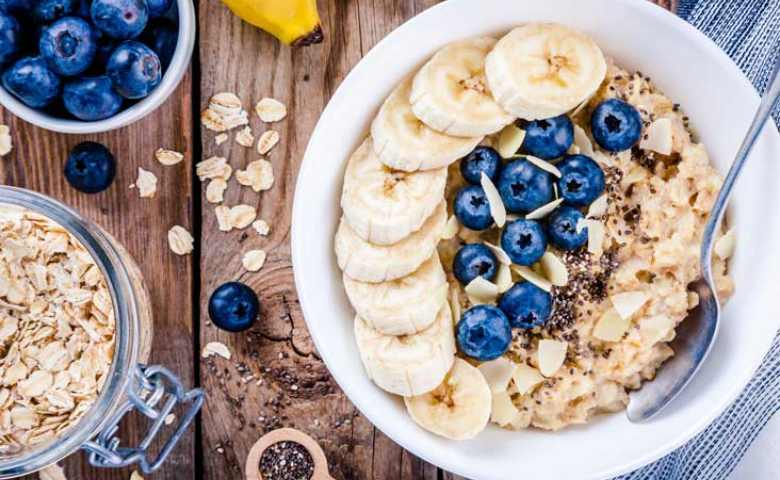
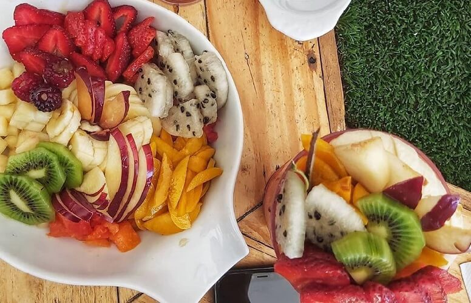

Menu Makanan Sehat
Sayuran
Manfaat sayur sayuran secara garis besar adalah sumber serat, vitamin, dan mineral yang cukup baik bagi tubuh dan kesehatan manusia. Ada banyak jenis sayuran yang ada di Indonesia yang berkhasiat untuk meningkatkan kesehatan dan metabolisme tubuh.
Oatmeal

Oatmeal mengandung kalsium, kalium, vitamin B6, dan vitamin B3. Oat juga diperkaya dengan bahan kimia nabati, seperti fenol, dan antioksidan unik yang hanya ditemukan dalam oat, yaitu avenanthramides dan fitoestrogen. Antioksidan tersebut berfungsi untuk mengurangi efek peradangan dan mencegah risiko berbagai penyakit kronis.
Telur
Telur mengandung kolin, yaitu zat mirip vitamin B yang penting dalam perkembangan otak selama kehamilan. Pada sel otak manusia, kolin mempercepat pelepasan protein yang diperlukan dalam pembentukan memori dan beberapa fungsi otak lainnya.
Ikan Laut
Ikan laut memang kaya lemak, tapi sebagian besar lemak ini merupakan omega-3 yang baik bagi jantung. Berbagai studi bahkan telah menunjukkan bahwa orang yang rutin makan ikan laut berisiko lebih rendah untuk terkena stroke dan penyakit jantung. Omega-3 bekerja cara dengan menurunkan kadar kolesterol total dan kolesterol jahat serta meningkatkan kolesterol baik. Lemak ini juga mencegah pembentukan plak pada pembuluh darah, mengurangi peradangan, dan menjaga detak jantung teratur.
Buah

Buah-buahan adalah salah satu sumber serat makanan yang sangat baik bagi tubuh. Manfaat makan buah setiap hari dapat membantu menjaga kesehatan usus, mencegah sembelit, dan masalah pencernaan lainnya. Kebiasaan makan asupan tinggi serat juga dapat mengurangi risiko kanker usus. Selain menjaga kesehatan pencernaan, makan makanan berserat juga membantu menurunkan kadar kolesterol jahat di dalam tubuh.